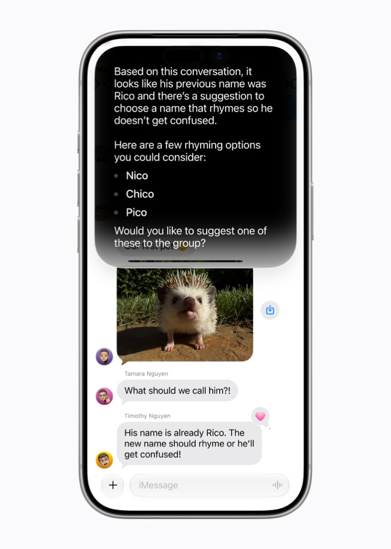

02

大厂官方
high / official announcement
2026-06-08
Apple：Siri AI 把屏幕、个人上下文和 App actions 变成系统级入口
事实： Apple Newsroom 描述了更强的 Siri AI、屏幕内容理解、个人上下文搜索和跨 App actions。
为什么重要： 价值不在“聊天更聪明”，而在用户不用先决定打开哪个 App；系统可以从当前屏幕和历史上下文接手。
这条消息的产品意义不是 Siri 变成一个更会聊天的助手，而是 Apple 把 AI 放回了 OS 的默认路径里。用户看到一段文字、一张图、一个日程或一封邮件时，入口不一定再是“打开某个 App”，而是直接指向当前屏幕和个人上下文。
这会改变 HCI 的责任边界。过去 App 负责自己的输入、状态和反馈；现在系统级 agent 会跨 App 读取意图、调用动作、返回结果。好处是少一步跳转，风险是用户更难知道系统到底引用了哪些上下文。
真正的产品竞争点会变成控制权：系统能不能在执行前解释边界，执行后给出撤销，失败时回到用户可理解的状态。对于设计团队，这比“多一个 AI 按钮”重要得多。
产品影响： OS 级 AI 必须设计可见权限、可撤销动作、失败恢复和“我为什么这样做”的解释层。
来源： Apple Newsroom